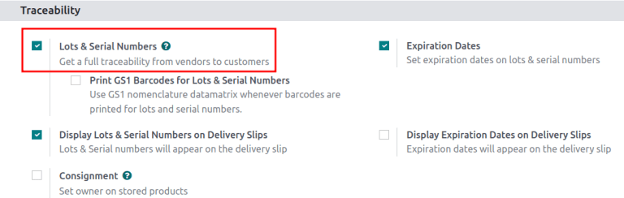
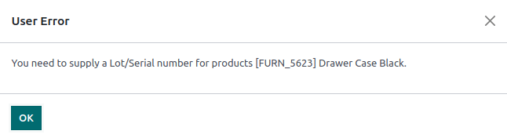
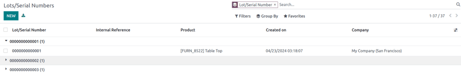

Números de lote¶
Los lotes son una de las dos formas de identificar y rastrear productos en Odoo. Por lo general representan un lote específico de productos que recibió, almacenó, envió o fabricó de forma interna.
Los fabricantes asignan números de lote a grupos de producto que comparten ciertas propiedades, de esta forma la trazabilidad es mucho más sencilla durante todo el ciclo de vida del producto.
Los lotes son útiles para gestionar una gran cantidad de productos fabricados o recibidos, y ayudan a rastrear el grupo al que pertenecen los artículos, lo cual es útil para retiradas de productos o fechas de caducidad.
Configuración¶
Habilite la función Números de lote y serie para rastrear productos por lotes. Después, vaya al formulario de cada producto para configurar el rastreo por número de serie.
Activar lotes y números de serie¶
Para rastrear productos por medio de lotes debe activar la función Números de serie y lote. Vaya a , busque la sección Trazabilidad, haga clic en la casilla junto a Números de serie y lote y luego haga clic en Guardar.
Rastrear por lotes¶
Una vez que haya activado la función úmeros de lote y de serie, configure cada producto que debe rastrear mediante lotes. Para ello, vaya a y elija el producto a configurar.
Vaya a la pestaña Inventario del formulario del producto. En la sección Trazabilidad, seleccione la opción Por lotes en el campo Seguimiento. Ahora podrá asignar números de lote nuevos o existentes a los lotes que acaba de recibir o fabricar de este producto.
Importante
Si un producto tiene existencias disponibles antes de activar el seguimiento por lotes o números de serie, utilice un ajuste de inventario para asignar números de lote a los productos existentes.
Asignar lotes para envío y recepción¶
Asigna nuevos número de lotes a bienes entrantes en el formulario de recepción. Al enviar productos salientes, seleccione productos con números de lote específicos en el formulario de entrega.
Al recibir¶
Puede asignar números de lote nuevos o existentes a bienes entrantes directamente en las recepciones.
Para comenzar, vaya a la aplicación para crear y confirmar una orden de compra de productos rastreados por números de lote. Después, haga clic en el botón inteligente Recibo que aparece en la parte superior de la página para ir al formulario correspondiente.
Nota
Si quiere ver una recepción existente vaya a la aplicación , haga clic en la tarjeta de kanban Recibos y seleccione el recibo deseado.
Importante
Al hacer clic en Validar antes de asignar un número de lote ocurrirá un error de usuario. Esto indica que debe asignar un número de lote antes de validar la recepción.
En el formulario de recepción, en la línea del producto en la pestaña Operaciones, seleccione el icono ⦙≣ (lista con viñetas) ubicado a la derecha del producto rastreado por número de lote.
El icono de lista con viñetas en la línea del producto.¶
Al hacerlo se abrirá la ventana emrergente Operaciones detalladas donde se asignan tanto el Lote o número de serie como la cantidad Hecha.
Hay dos formas de asignar números de lote, de manera manual y al copiar y pegar.
Asignación manual¶
Para asignar números de lotes de forma manual haga clic en Agregar una línea y elija la ubicación en la que almacenará los productos en la columna Para. Después escriba el número de lote o serie y especifique la cantidad hecha.
Nota
Haga clic en Agregar una línea para asignar varios números de lote o almacenar en varias ubicaciones y escriba un nuevo número de serie o de lote para las cantidades adicionales. Repita este proceso hasta que el total en la columna Hecho coincida con la cantidad hecha en la parte superior.

Copiar y pegar¶
Haga clic en Agregar una línea en la hoja de cálculo con todos los números de lote recibidos del proveedor (o elegidos de forma manual para asignarlos durante la recepción). Copie y pegue los números de lote en la columna Número de lote/serie.

Números de lote copiados a la línea de número de lote, con cada número de lote en su propia línea.¶
Odoo genera las líneas de números de lote necesarias en automático luego de hacer clic fuera del campo de texto. Las cantidades en la columna Hecho coinciden con la primera entrada. Ajuste las ubicaciones Para de forma manual y las cantidades Hecho para cada número de lote según sea necesario.
Ya que haya asignado números de lote a los productos, haga clic en Confirmar para cerrar la ventana emergente. Después, haga clic en Validar en el formulario de recibo.
Sobre órdenes de entrega¶
Con Odoo es posible especificar qué números de lote para un producto se elegirán para productos salientes en una orden de entrega.
Para comenzar, cree o seleccione una cotización existente en la aplicación . El botón inteligente Entrega estará disponible luego de confirmar la orden de venta, haga clic en él para ver el formulario de recibo de almacén para esa orden de ventas en específico.
Nota
También puede ir a las órdenes de entrega desde la aplicación , allí haga clic en la tarjeta de kanban Órdenes de envío.
Al hacer clic en el botón inteligente Entrega se abre el formulario de orden de entrega en el que deberá seleccionar los números de lote para la entrega. En la pestaña Operaciones, haga clic en el icono ⦙≣ (lista con viñetas) ubicado a la derecha del producto que rastrea por números de lote. Al hacer clic en ese icono aparece la ventana emergente Operaciones detalladas.
En la ventana emergente Operaciones detalladas deberá elegir un número de lote o de serie con la cantidad reservada completa tomada de ese lote en específico (si es que este tiene suficientes existencias).
Si no hay existencias suficientes en ese lote, las cantidades parciales de la Demanda se tomarán de varios lotes, cambie la cantidad en la columna Hecho para que solo incluya esa parte específica de la cantidad.
Nota
El lote seleccionado para las entregas varía según la estrategia de remoción que elija (FIFO, UEPS o PEPS). También dependerá de la cantidad ordenada y si la cantidad disponible en un solo lote basta para completar la orden.
Ver también
Después, haga clic en Agregar una línea, seleccione un número de lote o serie distinto, aplique el resto de cantidades hechas y haga clic en Confirmar para cerrar la ventana emergente. Por último, haga clic en el botón Validar para entregar los productos.

Gestión de lotes¶
Para gestionar y ver los números de lote para productos en el tablero Lote/números de serie vaya a .
Los números de lote están agrupados por producto de forma predeterminada y al seleccionar el menú desplegable para cada producto aparecen los números existentes. Seleccione un número de lote para modificar o agregar detalles vinculados al lote. También puede crear los números de lote desde esta página al hacer clic en el botón Nuevo.
Mostrar los números de lote agrupados por productos en el tablero lote/número de serie.¶
Modificar lotes¶
Al hacer clic en un lote en el tablero Lote/número de serie se mostrará una página separada donde puede ingresar información adicional sobre el lote.
Truco
Odoo genera un nuevo número de lote/serie en automático para continuar con el número más reciente, pero puede editarlo y cambiarlo a cualquier otro. Haga clic en la línea debajo del campo Número de lote/serie y cambie el número generado al número deseado.
En el formulario de número de lote es posible modificar los siguientes campos:
Lote/Número de serie: cambiar el número de lote vinculado al producto.
Referencia interna: registra un número de lote o de serie alternativo que se utiliza dentro del almacén y difiere del que utiliza el proveedor o el fabricante.
Empresa: especificar en qué empresa está disponible el número de lote.
Descripción: agregar detalles adicionales sobre el lote o número de serie.
Importante
Los campos Producto y Cantidad no se pueden modificar, ya que los números de lote se vinculan a movimientos de existencias existentes.

Ver también
Reservar el número de lote para un producto¶
Para crear un número de lote para un producto, primero tiene que ir a y haga clic en Nuevo.
Importante
Al crear un número de lote, este se reserva para un producto pero no lo asigna. Consulte la sección sobre asignación de números de lote al momento de la recepción para obtener más información sobre la asignación de números de lote.
Truco
Odoo genera un nuevo número de lote/serie en automático para continuar con el número más reciente, pero puede editarlo y cambiarlo a cualquier otro. Haga clic en la línea debajo del campo Número de lote/serie en el formulario del lote y cambie el número generado.
Una vez que se genere el nuevo Lote/Número de serie haga clic en el campo vacío junto a Producto para mostrar el menú desplegable. En este menú, seleccione el producto al que se le asignará este número.
Example
Se creó el número de lote 0000011 para el producto Cajón negro.
Luego de crear, guardar y asignar un nuevo número de lote al producto deseado, el número de lote se guarda como un número de lote existente vinculado al producto y podrá seleccionarlo al asignar números de lote a los productos de una recepción o al realizar un ajuste de inventario.
Example
Después de crear el número de lote 0000011 este aparecerá como opción para Cajón negro cuando asigne números de lote en la página Ajuste de inventario.
Gestione lotes para diferentes tipos de operaciones¶
De forma predeterminada, solo es posible crear nuevos lotes al recibir productos y no puede utilizar los números de lote existentes. En las órdenes de venta solo puede utilizar números de lote existentes y no puede crear nuevos en la orden de entrega.
Para cambiar si puede usar números de lote nuevos (o existentes) en cualquier tipo de operación, vaya a y seleccione el tipo de operación deseado.
En el formulario del tipo de operación, en la sección Números de lote y serie, seleccione la casilla Crear nuevo para permitir la creación de nuevos números de lote durante este tipo de operación. Elija Utilizar existentes si solo es posible seleccionar números de lote existentes.

Truco
Para transferencias dentro del mismo almacén que involucren productos que se rastreen por lotes, lo mejor será activar la opción Utilizar números de Lotes / de serie existentes para recibos de inventario
Trazabilidad¶
Los fabricantes y las empresas pueden consultar los reportes de trazabilidad para ver el ciclo de vida completo de un producto: de dónde proviene, cuándo llegó, dónde se almacenó y a quién se envió (y cuándo).
Para ver la trazabilidad completa de un producto, o agrupar por lotes, vaya a . De esta manera podrá ve el tablero de .
Aquí se enlistarán en automático todos los productos a los que se les haya asignado un número de lote y se podrá expandir para mostrar los números de lote que esos productos tienen asignados.
Para agrupar por lotes, primero elimine cualquier filtro de la barra de búsqueda. Después, haga clic en el menú desplegable Agrupar por, seleccione Agregar grupo personalizado, elija Número de lote/serie del menú desplegable y haga clic en Aplicar.
De esta manera mostrará todos los lotes o número de serie existentes y puede expandir la lista para mostrar todas las cantidades de los productos que tengan asignados ese número.
Reporte de trazabilidad¶
Para ver un reporte completo del movimiento de existencias de un número de lote, seleccione la línea del número de lote en el tablero Número de serie o lote y, en el formulario correspondiente, haga clic en el botón inteligente Trazabilidad.

Ver también